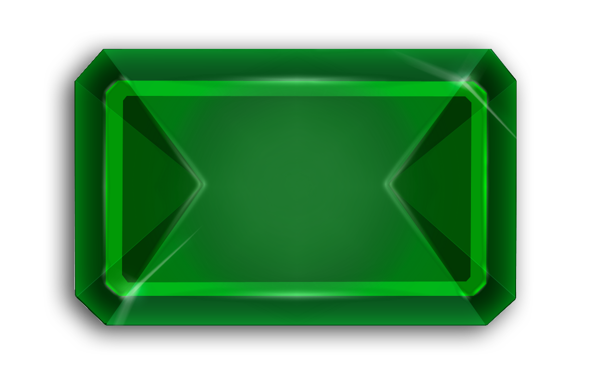
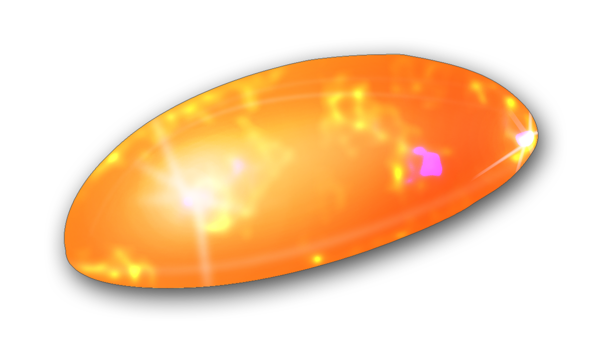

|
Was ist Dragako?
Dragako ist ein dauerhaft begleitetes Projekt des FaraFIN, bei dem die Studierenden in vier verschiedene Häuser anhand ihrer persönliche Interessen und Charakterzügen eingteilt werden. In diesen Häusern finden Sie studiengangübergreifend Kontakt zu anderen Studierenden, organisieren eigenverantwortlich kleinere Projekte und Veranstaltungen und kämpfen gemeinsam um den Gesamtsieg. Dafür können sie Einzel- und Teamleistungen einreichen und damit Punkte für ihr Haus generieren. Auf der zukünftig stets aktuellen Rangliste sind die aktuellen Punktestände der einzelnen Häuser zu sehen.
Am Ende des Semesters wird das Siegerhaus gekührt und bekommt einen Preis sowie für ein Semester Vergünstigungen verschiedenster Art.
|
| 
|
Das Haus EMERALD
Stets neugierig sind Emerald sehr ehrgeizige Menschen, die ihre Erfahrungen gerne mit Anderen Teilen. Ein Emerald weiß meist was er will und scheut deshalb nicht, Verantwortung für Andere zu übernehmen. Angehörige dieses Hauses werden gern um ihre Meinung gefragt, doch hören sie auch meistens lieber nur zu und beobachten.
|
|  |
Das Haus OPAL
Der Opal polarisiert durch seine häufig aufgeweckte Art. Ein Opal versucht einen Ausgleich zu finden zwischen seinen Pflichtaktivitäten und seinen Hobbies. Opal haben viele Interessen und scheuen sich nicht vor neuen Kontakten. Auch wenn sie tief in ihrem Inneren manchmal nachdenklich sind, zeigen sie nach Außen einen lebensfreudigen Charakter.
|
|
Das Haus PEARL
Pearl agieren leidenschaftlich und engagiert. Im Zentrum ihres Handelns steht meist das Wohl der Gemeinheit. Daher ist es in ihren Augen nicht verwerflich, ihre Stellung auch mal für eigene Vorteile zu nutzen. Ein Pearl ist bestrebt bei seinen Mitmenschen Sympathie zu wecken. Auch wenn er sich zu Neuem hingezogen fühlt und experimentierfreudig ist, genießt er geregelte Abläufe.
|
|
Das Haus RUBY
Ruby sind weniger die Grübler, sondern folgen meistens ihrem Herzen und schreiten zur Tat. Dabei sind sie keinesfalls unvorsichtige Impulsivtäter, sondern behalten auch in brenzligen Situationen stets einen klaren Kopf. Ein Ruby hebt sich von der Masse ab und durchbricht Traditionen, um den Fortschritt zu gewährleisten. Auch wenn er ab und zu in sich gekehrt ist, sind Ruby keineswegs auf den Mund gefallen und sind bei anderen Menschen recht beliebt.
|